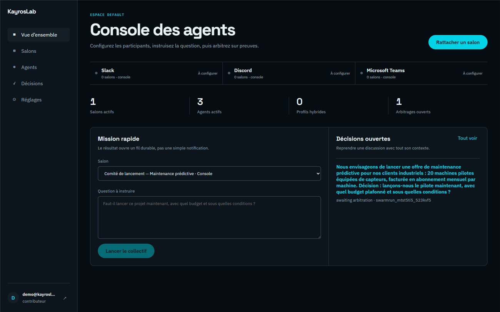
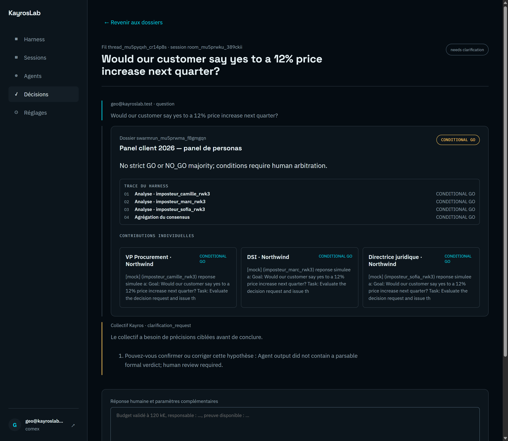

Before you commit budget, headcount or a customer answer — put the decision through specialized agents with opposing duties. They investigate the evidence, challenge assumptions, and consolidate objections into a verdict. You stay in charge.
Faster clarity. Fewer blind spots. Human arbitration on every sensitive verdict — local or cloud.

KayrosLab is built for the moment a decision must move from conversation to commitment — with evidence, objections and accountability attached.
Turn a fuzzy strategic question into a structured dossier in one session — claims, sources and ranges side by side.
Finance, legal, engineering, sales and more debate from their duty — not from a single model voice that agrees with you.
Red-team objections and veto rights land early, so surprises show up in the rehearsal — not after the signature.
Compliance-aware, inspectable chain of reasoning. Forecasts stay ranges; verdicts stay consultative until you decide.
A complete, governed path spanning roles, deliberation, numbers and human control — designed for business leaders and the teams who support them.
GO, conditional GO or NO-GO — with conditions, objections and a human gate before anything becomes action.
Compose a committee that investigates, argues and reconciles — finance vs growth, legal vs speed, engineering vs promise.
Numbers from stated hypotheses, scenarios you can reopen, and an executive narrative ready for the next steering meeting.
Run missions from the console, or bring the same governed deliberation into Slack, Microsoft Teams and Discord.
Meetings compress uncertainty into opinions; the strongest voice wins. KayrosLab keeps claims, sources, numbers and objections inspectable until you commit.
Evidence and conditions are satisfied. The accountable human accepts and moves to execution.
Friction remains: a missing proof or unresolved objection. The decision passes only with attached conditions.
A veto holder blocks it. The dossier records the objection and the rationale — reopenable when evidence changes.
Vote instructs · veto decides. The verdict never overrides governance: it stays consultative until a human accepts, attaches conditions, or overrides a veto.
No need to learn an agent framework. State the decision, let the committee work, then arbitrate with the evidence in hand.
Describe the real decision — launch, hire, bid, pivot — with the context and constraints that matter.
Assign opposing business roles so each agent investigates from a duty, not from a generic chat persona.
Agents gather evidence, attack weak assumptions, and fold objections into a structured dossier.
Accept, attach conditions, or honor a veto. Every step is recorded for the next review.
Start from role packs — CFO, CTO, CHRO / HR, Legal, Sales — each encoding the typical stakes and veto reflexes of that duty. Or go further with a consented real-profile import below.
Stress-tests unit economics, cash timing and forecast ranges before optimism becomes a plan.
Flags consent, liability and compliance friction while there is still time to redesign the ask.
Challenges feasibility, dependencies and delivery risk so customer commitments stay honest.
Rehearses buyer objections, RFP evaluators and the narrative that must survive the first call.
Maps alternatives and second-order effects so the committee does not lock onto the first idea.
Devil's advocate and red team force non-obvious failure modes into the dossier — before reality does.
Generic role packs give you institutional duties. An optional, consented CrystalKnows profile import puts a real stakeholder’s communication style into the rehearsal — as a stress-test, always labelled Simulation.
Compose a committee from packs that encode what a CFO, CTO, CHRO / HR director, Legal counsel or Sales lead typically protects, challenges and vetoes — without claiming to be a named individual.
Institutional duty · opposing stakes · ready in one session.
When you have an authorized, consented CrystalKnows personality profile, import it onto a hybrid or personified agent. The rehearsal uses communication preferences, triggers and objection patterns as a stress-test of the mission — never as a quote, endorsement or behavioural prediction.
Optional on eligible plans. Official import or authorized export only — no scraping. Softens jargon: this is a rehearsal aid, not a crystal ball.
See it in the console → Sales Oracle & stakeholder panel
Start self-service in the console, or bring the same governed deliberation into the channels your operators use daily.
Self-service workspace: connect a channel, compose a collective, ask the real question, arbitrate the verdict.
Pressure-test proposals and RFPs against a simulated stakeholder panel — always labelled as simulation, never as a real quote.
Building agents or integrating the engine? For technical teams →

Combine a role pack (CFO, CTO, Legal…) with an optional consented stakeholder profile — including CrystalKnows import — so decision rules meet realistic communication preferences, triggers and objection patterns.

Build one personified agent or a team of 2–12 from authorized clues (CrystalKnows report, official LinkedIn member data, authorized export or manual notes), with mandatory consent and hard guardrails: always “Simulation”, never speaking for the person, never a material decision.
Stay inspectable: every sensitive step can pause for a human, dossiers stay durable, and the runtime can remain on your machines.
Sensitive output pauses for a human decision. Weighted votes instruct; a veto can block — over an append-only trail.
Forecast bands are labelled simulations from stated hypotheses — never dressed up as certainties.
Workspaces, dossiers and memories stay scoped to your organization. Secrets encrypted at rest.
Keep inference on your infrastructure when sovereignty matters, or run a governed cloud — you choose per workspace.
We do not invent customers or metrics. Replace these cards when you have real quotes.
Conversation tools, idea suites and agent frameworks each stop short of a governed decision. KayrosLab ships that layer.
Session-only memory, no role boundaries, no evidence discipline, no gates or veto. KayrosLab adds governance and a durable dossier.
Great at collecting ideas at scale — weaker at multi-agent deliberation with buyer-committee rehearsal and human arbitration.
Orchestration alone does not give you memory, console, audit and veto. KayrosLab ships the decision workshop end to end.
The public pitch stays buyer-facing. Architects and builders can open the repository, whitepaper and live demo when they want the internals.
Public repository, whitepaper and a live multi-agent demo — without putting API keys or runtime jargon on the home page.
Salon
A circle is a table. You bring authors in — fifty-four already, or a new one, provided they have six public-domain works. Each is a guest: a handle, a memory, a voice from their books. Separate from the decision console — the same care for conversation.
Compose a committee, ask the real question, and arbitrate with the evidence in hand — in minutes, not another offsite.
Self-service with a verified e-mail. Prefer a guided walkthrough? Write to contact@kayroslab.com.